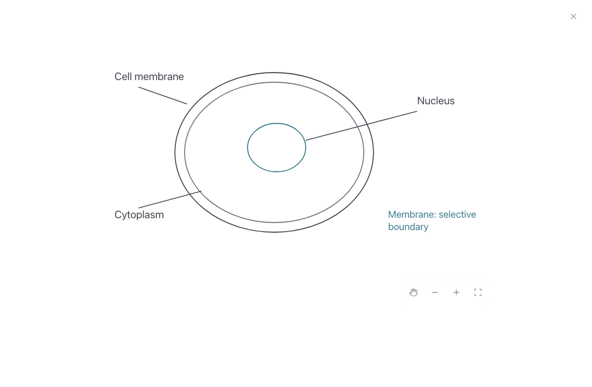
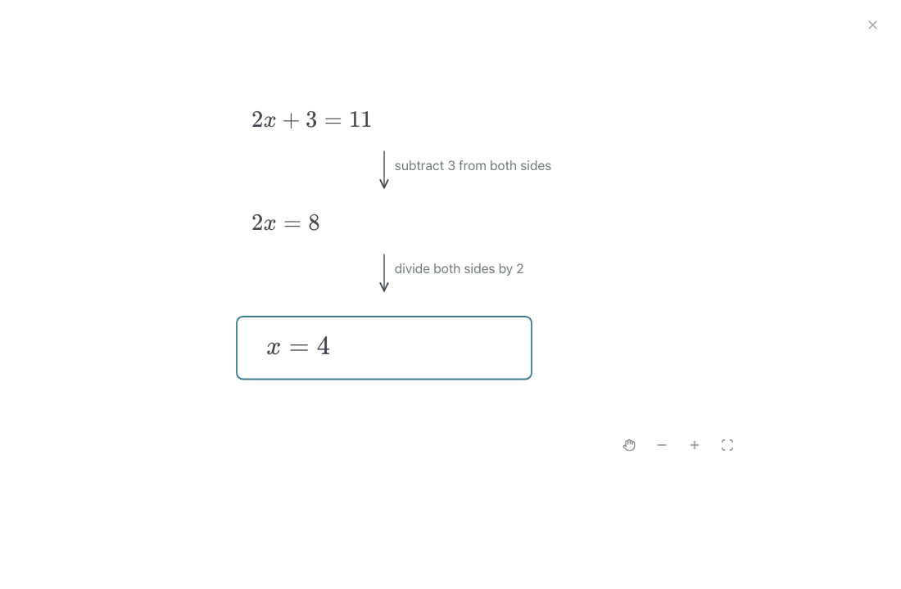
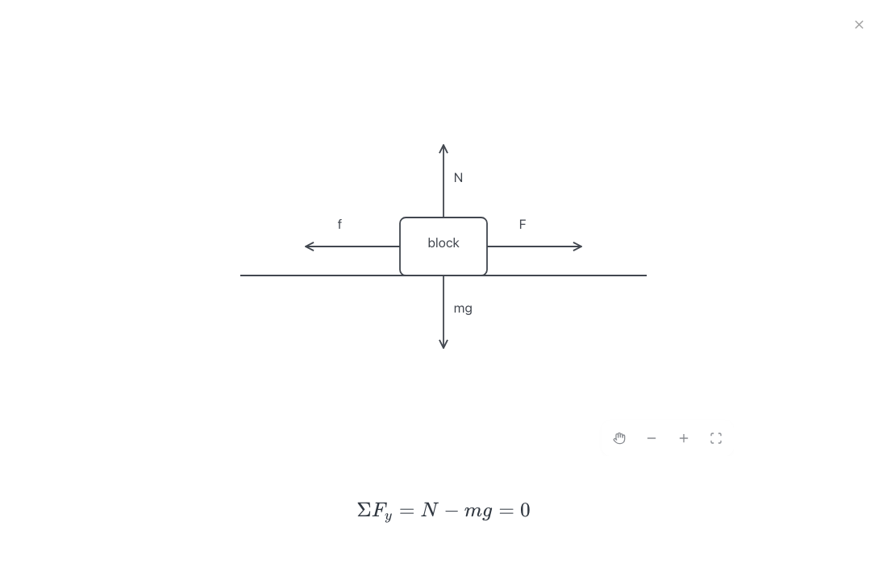
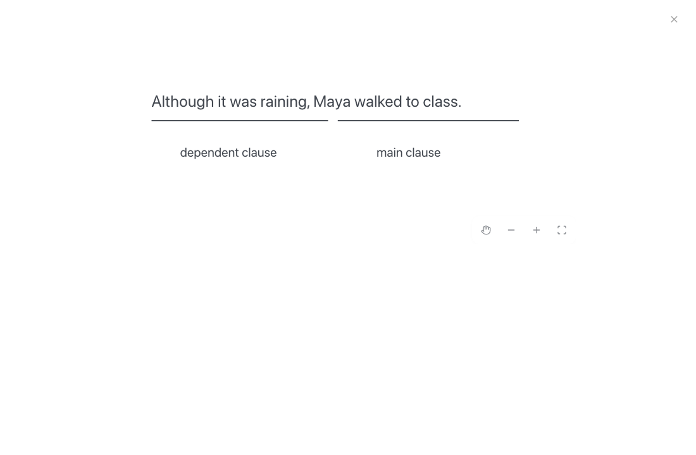
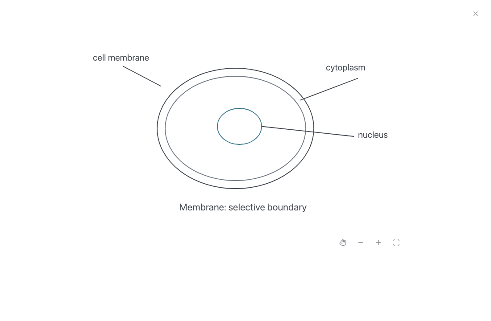
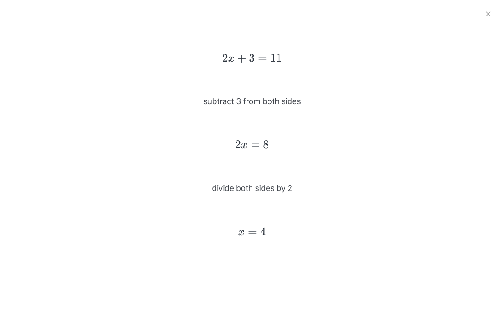
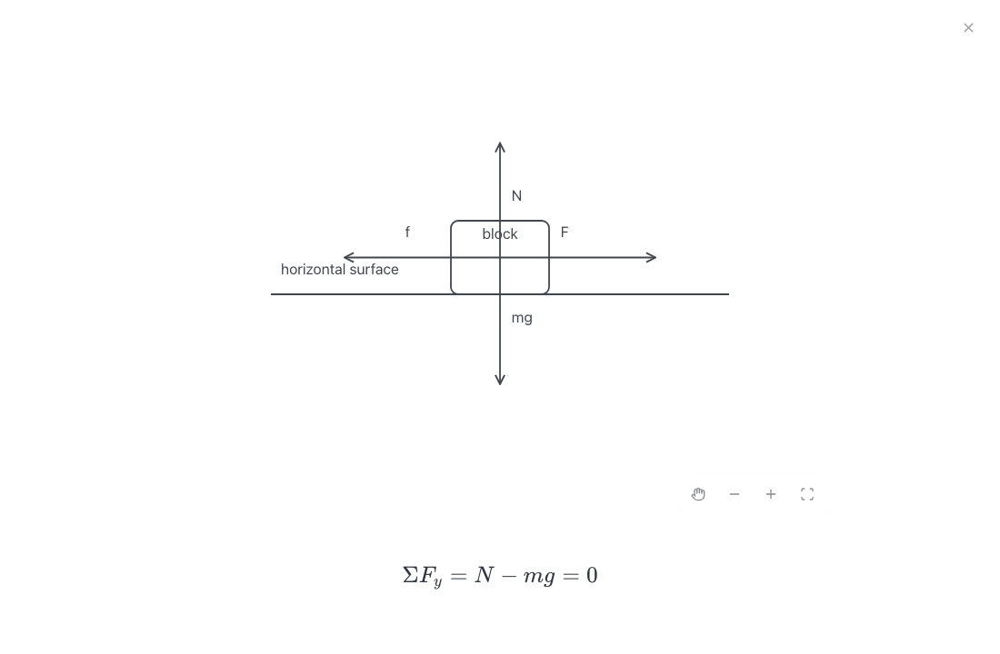
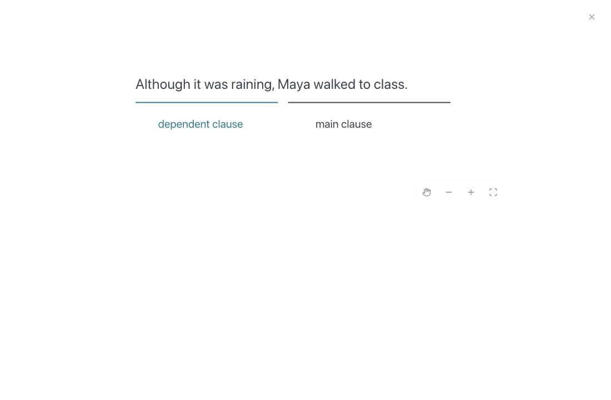
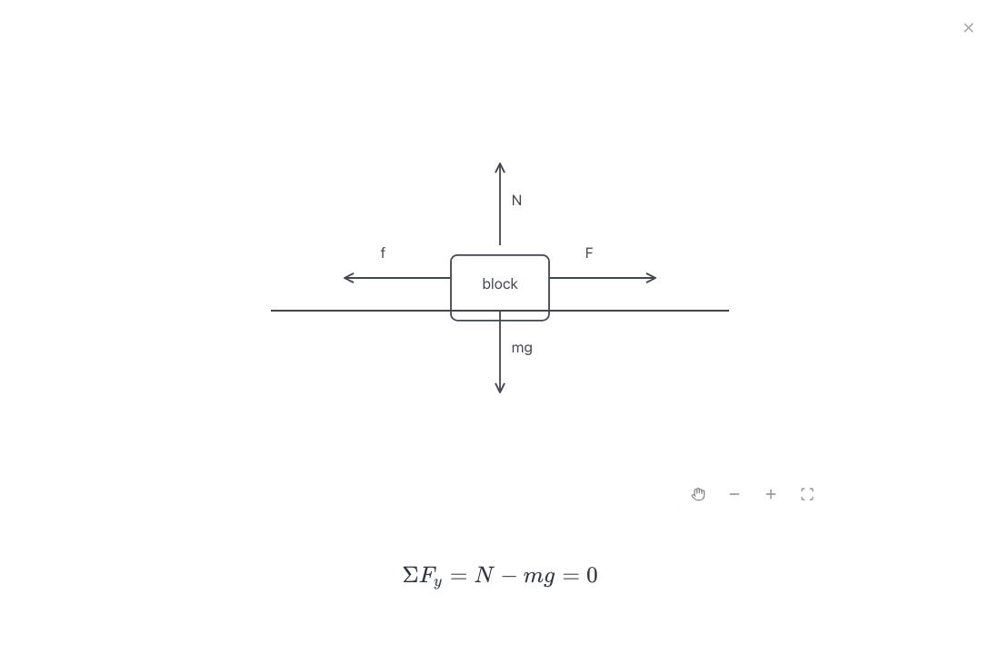
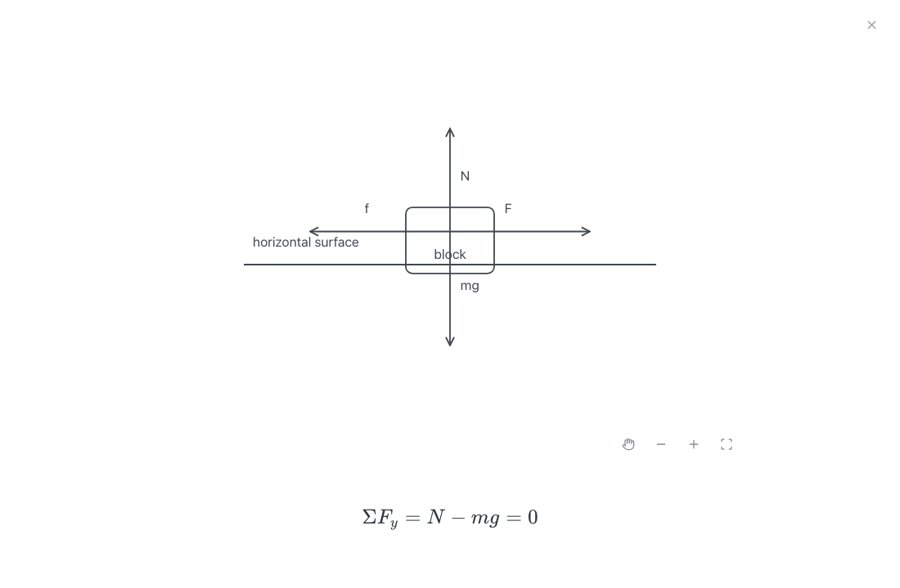

1.804s first text · 6.621s accepted board · 585 output tokens

Membrane/cytoplasm/nucleus containment, three labels and requested note are correct and readable; some leaders stop short of the shape boundary.
Real Terra outputs in the current production React renderer. Original failures, follow-up data and geometry limitations remain in the report. Images are static; this page makes no provider calls. Measured report · Measurements
| 8×10 grid (n=3 each) | Board ready median | Output tokens median |
|---|---|---|
| baseline | 2.418s | 228 |
| compact | 1.768s | 187 |
1.804s first text · 6.621s accepted board · 585 output tokens

Membrane/cytoplasm/nucleus containment, three labels and requested note are correct and readable; some leaders stop short of the shape boundary.
1.662s first text · 3.727s accepted board · 315 output tokens

All three equations, both operation annotations and boxed final answer are correct. Round 2 uses ordinary text/LaTeX blocks instead of a retained scene, which is supported.
1.775s first text · 3.756s accepted board · 353 output tokens

All four directions and both equations are correct. The second equation requires normal board scrolling. Round 2 has a force stroke through the generic block label, a remaining visual polish issue.
1.720s first text · 3.992s accepted board · 409 output tokens

Exact sentence, clause labels and quote zones are correct. Model-authored underline endpoints are approximate and do not align exactly with text spans, including after trusted left alignment repair. See grammar-geometry-audit.json.
1.194s first text · 4.850s accepted board · 573 output tokens

Membrane/cytoplasm/nucleus containment, three labels and requested note are correct and readable; some leaders stop short of the shape boundary.
0.647s first text · 1.632s accepted board · 129 output tokens

All three equations, both operation annotations and boxed final answer are correct. Round 2 uses ordinary text/LaTeX blocks instead of a retained scene, which is supported.
1.693s first text · 3.629s accepted board · 374 output tokens

All four directions and both equations are correct. The second equation requires normal board scrolling. Round 2 has a force stroke through the generic block label, a remaining visual polish issue.
1.494s first text · 3.582s accepted board · 363 output tokens

Exact sentence, clause labels and quote zones are correct. Model-authored underline endpoints are approximate and do not align exactly with text spans, including after trusted left alignment repair. See grammar-geometry-audit.json.
0.821s first text · 1.494s accepted board · 88 output tokens

Exactly one existing rectangle moved down 12px; all other object IDs/content and both equation blocks were retained. This tests literal object editing, not the physical plausibility of moving a block through its original surface.
1.273s first text · 1.958s accepted board · 123 output tokens

Exactly one existing rectangle moved down 12px; all other object IDs/content and both equation blocks were retained. This tests literal object editing, not the physical plausibility of moving a block through its original surface.